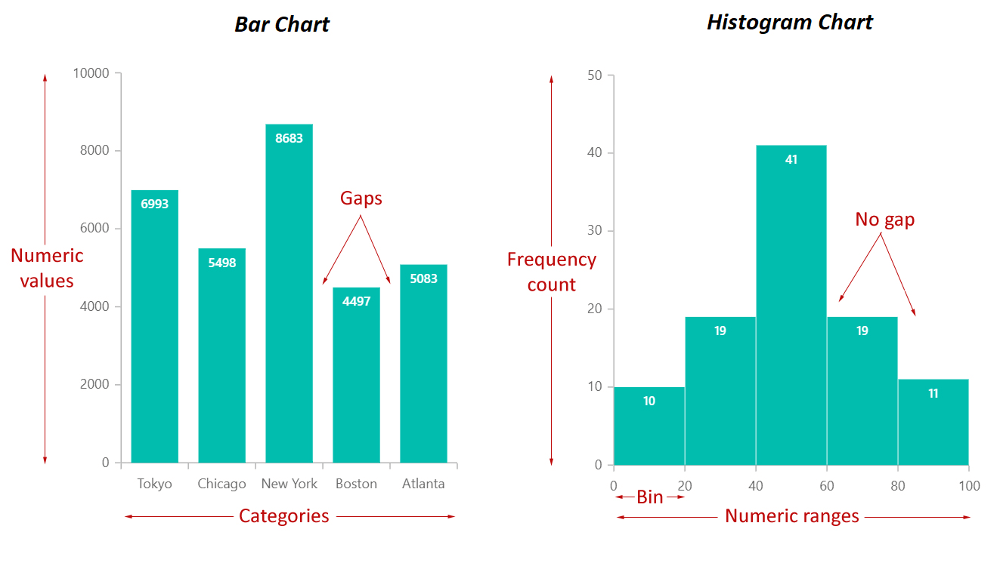
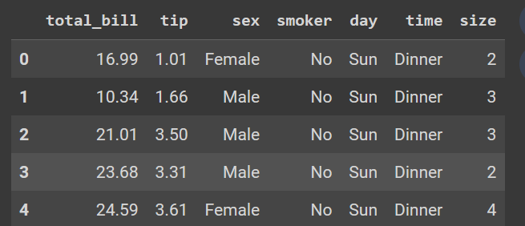

.png)
Working with numerical data helps us understand the distribution of values in a numerical variable. This gives us a sense of the frequently occurring values and how these values vary from each other. It also highlights the presence of extreme values in a variable, if any.
In this article, you will learn how to plot a histogram using Seaborn, a Python library built on Matplotlib for statistical data visualization. You will also learn how to customize and interpret your histogram plots to derive precise insights from your data.
What is a Histogram?
A histogram is used to plot numeric data. It splits a numeric variable into various equal ranges known as bins and plots the total number of observations that fall under each bin as bars. These bars are adjacent to each other, with no space between them. This differs from a bar plot that plots the frequency of categorical data, with space between the bars.

Building a Histogram with Seaborn
We will build our histogram using the tips dataset in the seaborn library. This dataset contains information about tips received by a waiter over a period of months. Before proceeding, ensure you have imported the pandas, Seaborn, and Matplotib libraries.
import pandas as pd
import seaborn as sns
import matplotlib.pyplot as pltLet’s view the columns in the dataset.
tips = sns.load_dataset('tips')
tips.head()
tips dataset. Image by Author.We will use the histogram to answer questions from our dataset regarding the tip variable, such as:
- What is the distribution of the tip?
- What is the highest and lowest tip amount received?
- What is the tip amount most frequently received by the waiter?
- Is there a difference between the distribution of tips from female and male customers?
Creating the histogram
To build a seaborn histogram, you need to use the sns.histplot() function. The following are the key arguments to provide:
data: the pandas dataframe.x: the variable of interest in the data.color: the color of the bars.alpha: the transparency of the bars.bins: the number of bins in the histogram.binwidth: the width of each bin.kde: A boolean to add a kernel density estimationhue: to differentiate data subset based on another variable
Use the following code to build a simple histogram for us to start with, adding title and axis labels to the plot.
sns.histplot(data=tips, x='tip')
plt.title("Distribution of tips received by the waiter")
plt.xlabel("Tip amount")
plt.ylabel("Frequency")
plt.show()
Enhancing the histogram
You can improve the histogram by providing some of the arguments explained in the previous section.
Adjusting bin sizes and width
Currently, the default number of bins is set to auto based on the number of observations, and the bandwidth is set to None by default.
Note
Using a bin width overrides the
binsargument.
Let’s increase the number of bins by giving a higher value, say 100.
sns.histplot(data=tips, x='tip', bins=100)Alternatively, you can set the binwidth to 0.1, you will still get the same plot.
sns.histplot(data=tips, x='tip', binwidth=0.1)
Changing the bin color
To set the bin’s color, add a value to the color argument. Let’s give the histogram the color green.
sns.histplot(data=tips, x='tip', color="green")
plt.title("Distribution of tips received by the waiter")
plt.xlabel("Tip amount")
plt.ylabel("Frequency")
plt.grid(True)
plt.show()
Add a Kernel Density Estimation (KDE)
To ease interpretation, we can set the kde argument to True. This will apply a kernel density estimation that smooths the histogram points, revealing the shape of the distribution.
sns.histplot(data=tips, x='tip', color="green", kde=True)
plt.title("Distribution of tips received by the waiter")
plt.xlabel("Tip amount")
plt.ylabel("Frequency")
plt.grid(True)
plt.show()
kde to true. Image by AuthorAdd grouping variables
You can add a grouping variable to the histogram to see the distribution for each respective group. For example, let’s group the histogram by sex by adding a sex group to the hue argument to see the distribution of tips given by male and female customers.
Note
This is going to override the
colorargument you specified earlier.
sns.histplot(data=tips, x='tip', color="green", kde=True, hue="sex")
plt.title("Distribution of tips received by the waiter")
plt.xlabel("Tip amount")
plt.ylabel("Frequency")
plt.grid(True)
plt.show()
Interpreting Histograms
Interpreting a histogram is not difficult, especially once you use the kernel density estimation on the plot. The highest bars are the frequently occurring values and the highest points on the kernel density plot are the highest bars. We can deduce from our histogram that the most frequent amount of tips received by the waiter ranges from $2 to $3.

The tail of the kernel density plot indicates extreme values. The longer the tail, the more extreme values present in the data are. This tail is referred to as a skew. A long tail to the left means the distribution is left-skewed. A long tail to the right means the histogram distribution is right-skewed, just like in the case of our plot. This means the waiter received tips above $6 from a few customers.

The difference between the two kernel density plots also tells us that male customers give higher tips to the waiter than female customers, though the number of male customers is greater than that of female customers. The minimum tip the waiter receives is $1, while the highest is $10.

Best Practices when Creating Histograms
A histogram is a powerful plot that can tell you much about your numeric variables. Here are some best practices to ensure you craft accurate and precise histograms.
- Choose an Appropriate Bin Size: When choosing a bin size, try various values and ensure that the selected bin size conveys as much information as possible.
- Label Axes: Ensure you provide informative labels when labeling your axes to help your viewers understand the plot.
- Use Contrasting Colors: When comparing groups, use contrasting colors to make it easy to identify group differences.
- Use Legends: When working with group variables, it is advisable to have a legend to identify the group and their respective colors in the plot.
- Use Consistent Bin Widths: When setting bin width size, ensure your bin width is consistent throughout to avoid distorting the information conveyed by the plot.
Conclusion
When conducting predictive analysis on a dataset with numerical variables, it is crucial to view the distribution of these variables to identify outliers. This is where a histogram comes into play. You can use a histogram to see how the values in a variable are dispersed from each other, making the histogram a very important plot for exploratory data analysis.
In this article, you have learned about histograms and how to build and interpret them using the Seaborn library in Python. If you want to learn more about histograms, here are some valuable resources.
How to Read Histograms: 9 Steps (with Pictures)
Shapes of Distributions: Definitions, Examples
Need Help with Data? Let’s Make It Simple.
At LearnData.xyz, we’re here to help you solve tough data challenges and make sense of your numbers. Whether you need custom data science solutions or hands-on training to upskill your team, we’ve got your back.
📧 Shoot us an email at admin@learndata.xyz—let’s chat about how we can help you make smarter decisions with your data.
Your next breakthrough could be one email away. Let’s make it happen!
Need Help with Data? Let’s Make It Simple.
At LearnData.xyz, we’re here to help you solve tough data challenges and make sense of your numbers. Whether you need custom data science solutions or hands-on training to upskill your team, we’ve got your back.
📧 Shoot us an email at admin@learndata.xyz—let’s chat about how we can help you make smarter decisions with your data.